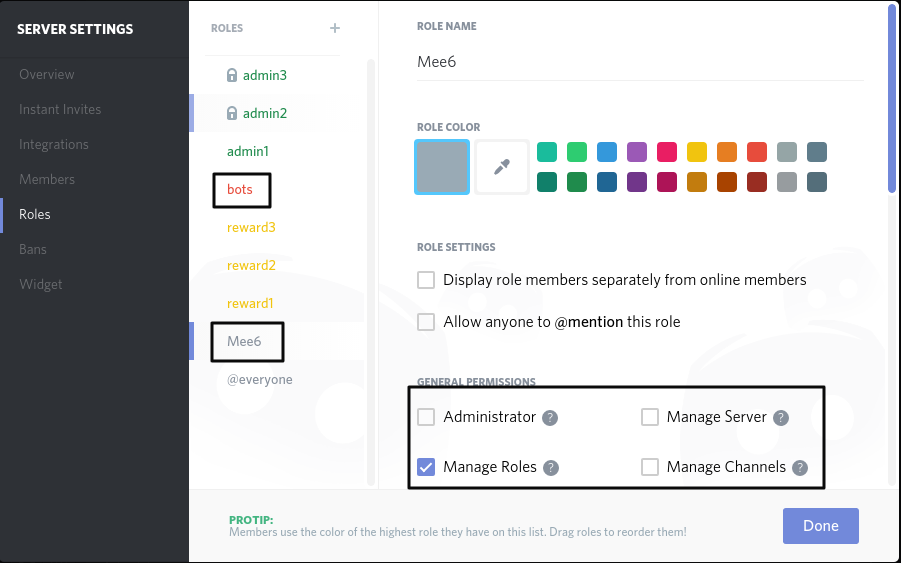
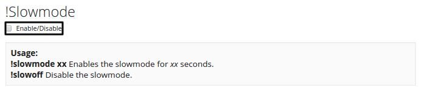

Warning
this page need grammer correction and functionality check, not everything on here is right
Moderator plugin
Cool moderator commands !slowmode/clear/mute
mee6 role and needed permissions

(for role setting in discord: menu symbol next to server name=>server settings=>roles)
to let this work you need to make sure that Mee6 has all permissions in one of his ranks.
We could give the bot rank here the all permissions and remove the Mee6 rank, it would still work the same.
Clear command

To use clear command enable it by clicking on check box and then pressing Update button at bottom of page.
This command will clear chat messages.
To use it type in chat !clear 1-1000 or to clear person messages not all use !clear @nameofperson
Slowmode command

To use Slowmode command enable it by clicking on check box and then pressing Update button at bottom of page.
This command will slow chat. Example i will turn on slowmode for 10 seconds and all people can only type 1 message in 10 seconds. (Admins can spam)(Admins are who can access dashboard)
To use it type in chat !slowmode (seconds) or to turn off Slowmode use !slowoff
Mute command

To use Mute command enable it by clicking on check box and then pressing Update button at bottom of page.
This command will mute person. Example i will turn on mute on @testaccount and now test account can't type in channel i activated command, now i will unmute @testaccount and he can type again.
To use it type in chat !mute @username or to turn off Mute use !unmute @username
Banned words

To use banned words system enable it by typing words to be banned and then pressing Update button at bottom of page.
This system will delete banned words from chat.
Example i will add ass word to banned words list then try typing that word with test account, bot deletes bad word message and in chat types message your name, LANGUAGE!!! 😡
Moderator roles

To use Moderator roles enable it by typing roles names and then pressing Update button at bottom of page.
This will allow to use Moderator commands for other people.
Example i will add role Adminand Mod then people who have role Admin or Mod can use Moderators commands